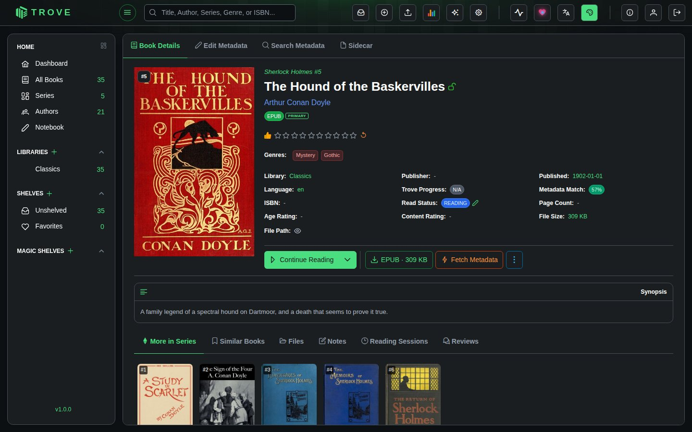
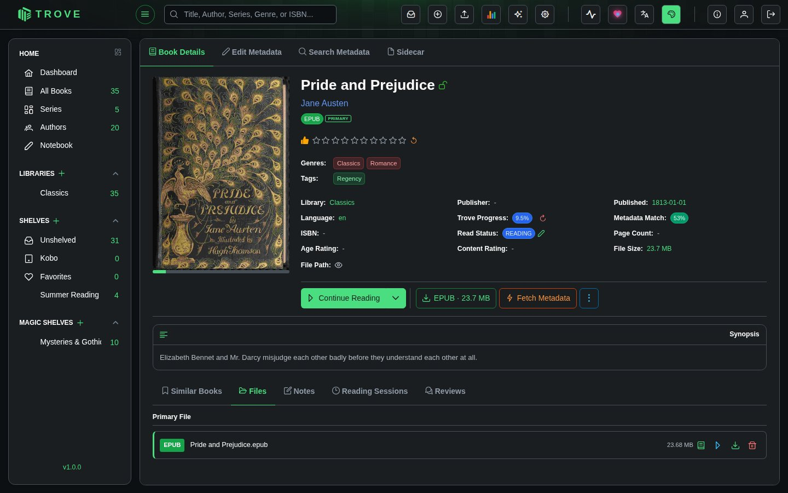
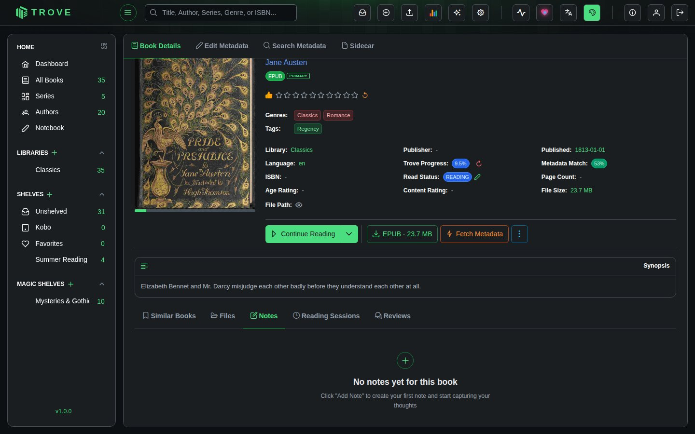
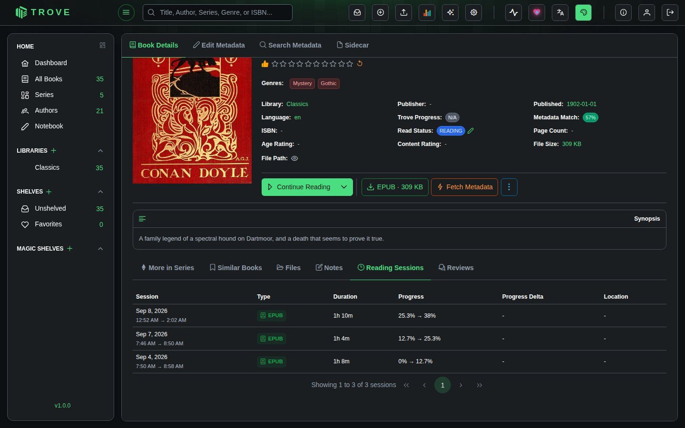
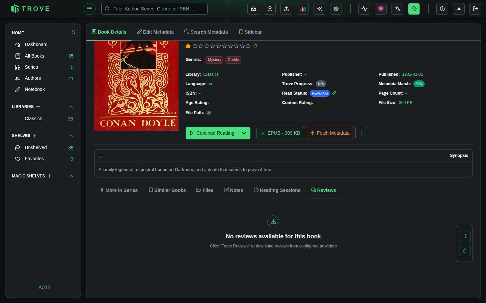
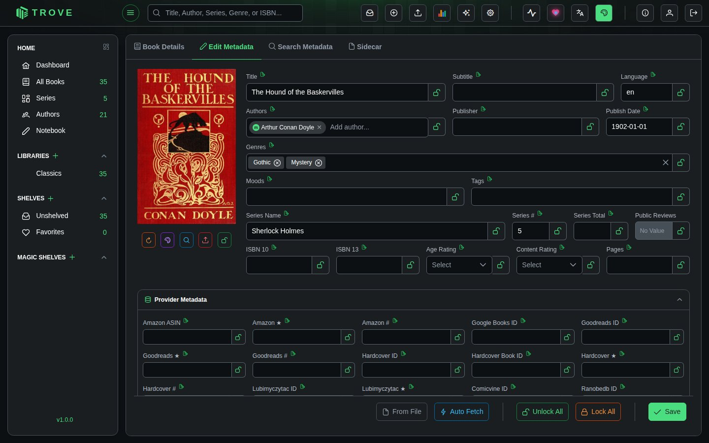
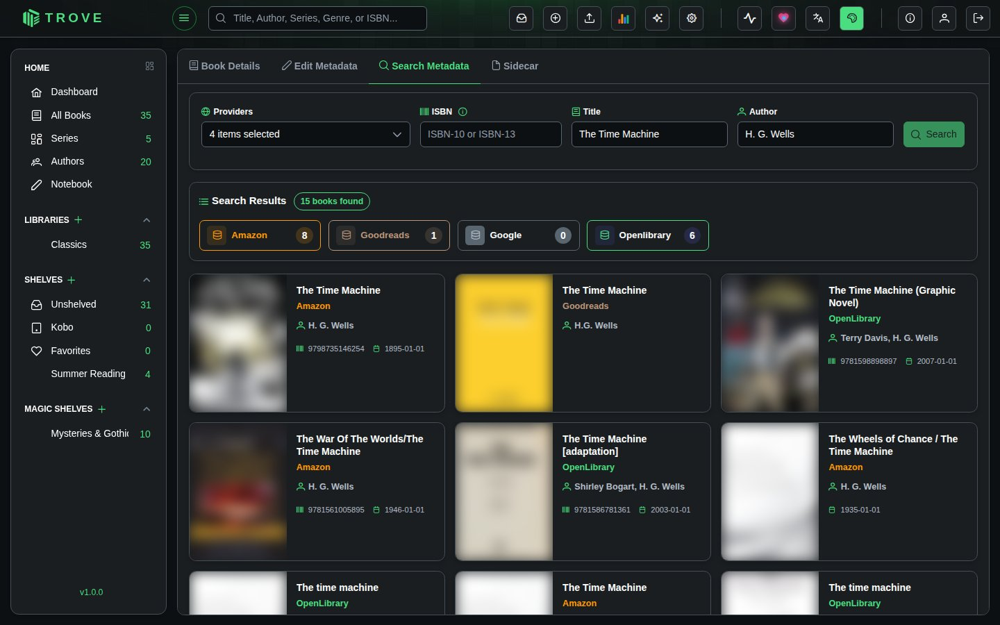
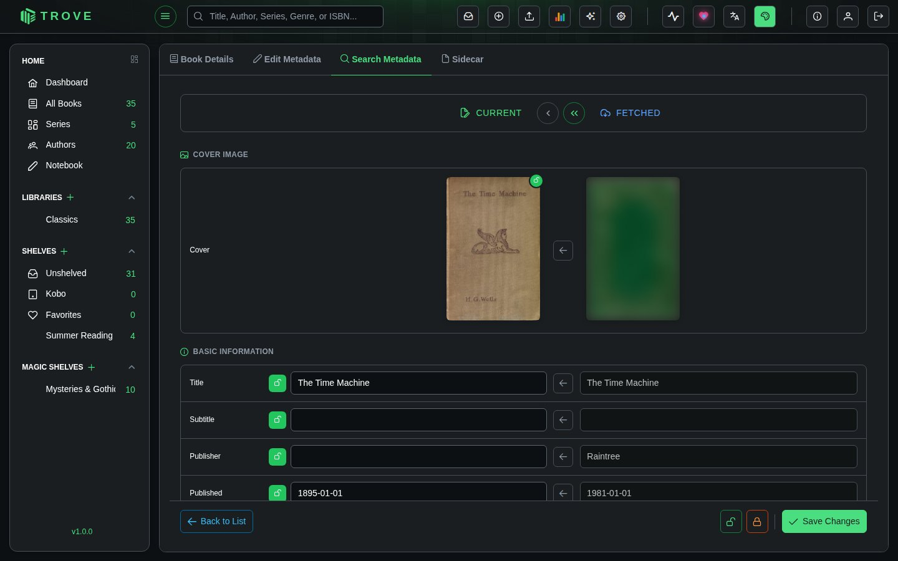
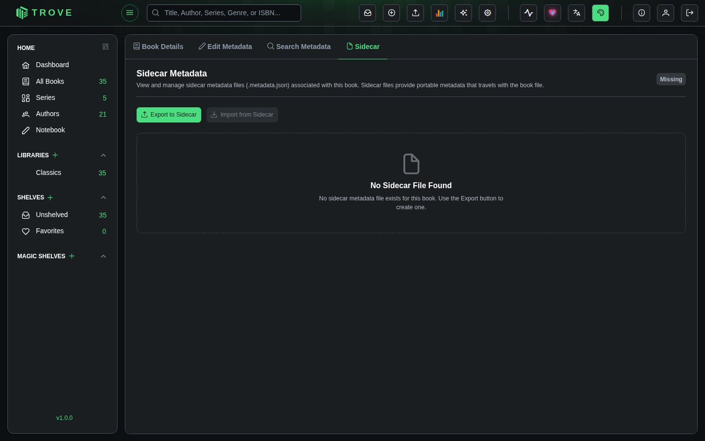

Metadata Center
The Metadata Center is the central hub for viewing and managing everything about a book. Access it by clicking any book cover or title in the book browser. It has four top-level tabs (Book Details, Edit Metadata, Search Metadata, Sidecar). The Book Details tab includes a row of content tabs at the bottom (Similar Books, Files, Notes, Reading Sessions, Reviews).

Book Details
The default view displaying the book's core metadata at a glance.
Header area:
- Book cover image (click to enlarge)
- Title, author(s), and series position
- Book type badge and lock status
- Community ratings from Amazon, Goodreads, Hardcover, and RanobeDB (where available)
- Personal star rating (click to rate)
Metadata fields:
- Genres and tags (clickable to filter your library)
- Library, publisher, published date, language
- Trove Progress (metadata completeness score), metadata match score
- Page count, age rating, content rating, file size
- ISBN and file path
Action buttons:
- Continue Reading / Read: Opens the book in the appropriate reader
- EPUB / PDF: Download the book file directly
- Fetch Metadata: Search metadata providers for updated information
- Synopsis: Toggles the book description
Similar Books
Displays books from your library that are similar to the current book, based on shared authors, genres, and other metadata. Books in the same series are excluded to keep recommendations useful.
Recommendations are computed by a similarity algorithm and cached for performance. They update when the Update Book Recommendations task runs.
Files
Manage all files associated with a book. Files are organized into three categories.

Primary File is the main book file used for reading. Each file entry shows the format badge, filename, and size.
Actions per file (icons on the right):
| Icon | Action | Description |
|---|---|---|
| Book | Read | Opens the file in the built-in reader |
| Play | Stream | Opens in the streaming reader (EPUB/PDF only) |
| Download | Download | Downloads the file to your device |
| Trash | Delete | Removes the file (disabled if it's the only format) |
Alternative Formats are additional versions of the same book in different formats (e.g., both EPUB and PDF). Useful for reading on different devices or readers.
Supplementary Files are non-book files associated with the book, such as companion guides or bonus content. These can only be downloaded or deleted.
Notes
Attach personal notes to any book. Notes are private to your user account.

Each note has a title (max 255 characters) and free-form content body. Notes display as cards showing the title, last updated timestamp, and a content preview.
| Action | How |
|---|---|
| Create | Click the + button on the right |
| Edit | Click the pencil icon on any note card |
| Delete | Click the trash icon (with confirmation) |
Notes are sorted by most recently updated first.
Reading Sessions
Tracks your reading activity automatically. Every time you open and read a book, a session is recorded with precise timing and progress data.

| Column | Description |
|---|---|
| Session | Date and time range (e.g., "Feb 20, 2026 / 3:51 AM → 3:52 AM") |
| Type | File format used for reading (EPUB, PDF, CBX, etc.) |
| Duration | How long the session lasted |
| Progress | Start and end reading position as percentages (e.g., "71.84% → 73.5%") |
| Progress Delta | Net change in reading progress, color-coded: green (↑ forward), red (↓ backward), gray (no change) |
| Location | Page number or reading position, if available |
Sessions are paginated and sorted most recent first. They are created automatically by the built-in readers and cannot be manually added or edited through the UI.
Reviews
Displays reader reviews fetched from external metadata providers like Amazon and Goodreads.

Each review card shows:
- Reviewer name, source provider (e.g., Amazon), and country
- Star rating (1 to 5 stars) and review date
- Review title and body text
Reviews marked as spoilers are blurred until you choose to reveal them. Use the Reveal All / Hide All buttons to manage spoiler visibility in bulk.
Reviews are fetched alongside book metadata and cannot be manually created. Users with metadata editing permissions can delete individual reviews or refresh them from providers.
Edit Metadata
Directly edit any metadata field for the book. Changes are saved when you click the Save button at the bottom right.

Fields
| Section | Fields |
|---|---|
| Basic Information | Title, Subtitle, Language, Authors, Publisher, Publish Date, Description |
| Genres & Tags | Genres/Categories, Moods, Tags (all support autocomplete from existing values) |
| Series | Series Name, Series #, Series Total |
| Identifiers | ISBN 10, ISBN 13 |
| Classification | Age Rating (All Ages through 21+), Content Rating (Everyone through Explicit), Pages, Public Reviews toggle |
| Provider Metadata | Amazon ASIN/Rating/Review Count, Goodreads ID/Rating/Review Count, Google Books ID, Hardcover IDs/Rating/Review Count, LubimyCzytac ID/Rating, RanobeDB ID/Rating, Audible ID/Rating/Review Count, and more |
| Audiobook | Narrator, Abridged (Yes/No/Unknown) — only shown for audiobook files |
| Comic | Publishers, Pencillers, Inkers, Colorists, Letterers, Characters, Volume, Issue — only shown for comic archives |
Field Locking
Every field has an individual lock icon. Locked fields are protected from being overwritten during metadata fetches, keeping your manual edits safe. Use Lock All / Unlock All at the bottom to toggle all fields at once.
Action Buttons
| Button | Description |
|---|---|
| From File | Extracts metadata directly from the book file (EPUB, PDF, etc.) and populates the form. Useful for recovering embedded metadata. Not available for physical books. |
| Auto Fetch | Triggers a background metadata refresh task that queries all configured providers and updates the book automatically. |
| Unlock All / Lock All | Toggles the lock state of every field at once. |
| Save | Persists all changes to the database. |
Search Metadata
Manually search metadata providers and cherry-pick which fields to apply to your book.

Searching
The search form pre-fills with the book's current title, author, and ISBN. Select which providers to query (Amazon, Audible, Goodreads, Google Books, Hardcover, LubimyCzytac, RanobeDB, and others enabled in your instance). Results stream in as each provider responds, with a count badge on each provider pill.
Comparing and Applying
Click any result to open the side-by-side comparison view.

The left column shows your Current values, the right column shows the Fetched result. For each field:
- Click the arrow button between columns to copy the fetched value to your current metadata
- Hover after copying to see a reset option that reverts the change
- Fields you've already saved show a green checkmark
The cover image comparison works the same way: transfer the fetched cover to replace your current one.
Click Back to List to return to search results, or Save Changes to persist your selections. Lock controls at the bottom let you protect fields before saving.
Sidecar
Export and import portable metadata files that travel alongside the book file on disk.

A sidecar is a metadata.json file written to the same directory as the book file. It contains a complete snapshot of the book's metadata in a structured JSON format, including title, authors, genres, series info, provider identifiers, ratings, and cover references.
Sync Status
| Status | Meaning |
|---|---|
| In Sync | Sidecar exists and matches the database |
| Outdated | Database metadata has changed since the sidecar was last exported |
| Missing | No sidecar file exists yet |
| Conflict | Sidecar and database differ significantly |
Actions
| Button | Description |
|---|---|
| Export to Sidecar | Writes the current database metadata to a metadata.json file next to the book file. Creates or overwrites the existing sidecar. |
| Import from Sidecar | Reads the sidecar file and updates the database. Only replaces fields that have values in the sidecar, leaving others untouched. Disabled when no sidecar exists. |
The viewer displays the full JSON content, along with the generation timestamp, version, and generator info.
Additional Notes
- The tabs shown depend on the book. The Series tab only appears if the book belongs to a series with more than one book. Audiobook and Comic metadata sections in Edit Metadata only appear for the corresponding file types.
- Reading sessions are tracked across all reader types (EPUB, PDF, Comic, Streaming PDF). Progress is recorded as percentages for ebooks and page numbers for PDFs.
- Reviews are read-only for regular users. Admins and users with the Edit Metadata permission can fetch, delete, or lock reviews.
- File management requires appropriate permissions. Deleting the last remaining file of a book is not allowed.
- Locked fields are visually indicated with a yellow lock icon. Locking a field prevents automated metadata fetches from overwriting your manual edits but does not prevent you from editing the field directly.
- See Metadata Settings for configuring which provider fields are visible in the Edit Metadata form.
- See Fetch Configuration for controlling how automated metadata lookups behave.